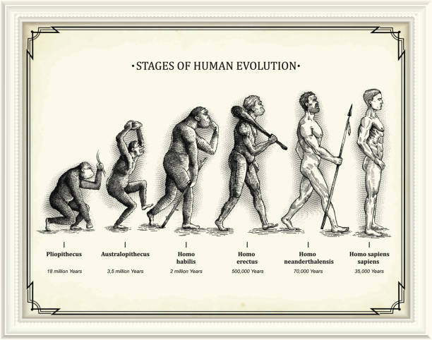

Have you ever wondered how humans have evolved over time? This site offers an introductory, broad overview of human evolution. Much of our knowledge about evolution comes from evidence found by paleoanthropologists, who study and identify features of human fossils. We will highlight notable ancestors, major species and developments, and other evolutionary trends and findings.
The Homo genus is that includes our modern human species, the Homo sapiens. Before Homo sapiens, there were other significant species along the way that resemble our modern day human.
Homo habilus, which means "handy man," inhabited East Africa around 2.3 to 1.4 million years ago. Recognized as one of the earliest members of the Homo genus, Homo habilus displayed a significant leap in tool use. These early humans crafted and used simple stone tools, marking a crucial milestone in our evolutionary journey. Their ability to manipulate their environment paved the way for future technological advancements and demonstrated an adaptive advantage in early human development.
Homo erectus, a species that emerged around 1.9 million years ago, represents a major evolutionary step in the human timeline. With a more erect posture and larger brain capacity than its predecessors, Homo erectus expanded beyond Africa and migrated into different regions of Asia and Europe. Mastering the use of fire and creating more advanced tools, Homo erectus displayed enhanced adaptability, marking a significant chapter in human evolution. This species persisted for nearly 1.5 million years, leaving an enduring imprint on the story of our ancestors.
Homo neanderthalensis, otherwise known as Neanderthals, a distinct human species, thrived in Europe and parts of Asia from around 400,000 to 40,000 years ago. Recognized for their robust physique and unique adaptations to cold climates, Homo neanderthalensis were skilled hunters and toolmakers. Recent genetic studies reveal interbreeding between Homo neanderthalensis and Homo sapiens>, suggesting a shared ancestry. Homo neanderthalensis possessed symbolic expression, buried their dead, and demonstrated a level of cultural sophistication. Despite their extinction, the legacy of Neanderthals lives on in the genetic makeup of modern humans, revealing the interconnectedness of our evolutionary paths.
These developments and inventions were major turning points that highlighting our ability to adapt, thrive, and diversify our species across millenia.
The adoption of upright walking, or bipedalism, was a crucial adaptation that freed the hands for tool use and marked a significant departure from our ape ancestors.
The development and improvement of tools, starting with simple stone tools crafted by early hominids like Homo habilis, allowed for greater control over the environment and enhanced survival skills.
Homo erectus's migration out of Africa, approximately 1.9 million years ago, marked a key moment in human evolution, as our ancestors ventured into new territories, adapting to diverse environments.
Homo erectus is associated with the mastery of fire, which provided warmth, protection, and facilitated cooking. This technological advancement influenced social behaviors and dietary patterns.
Over time, there was a gradual increase in brain size, particularly evident in later species like Homo sapiens. This expansion is linked to advanced cognitive abilities, including language and complex problem-solving.
| Year | Species | Characteristics |
|---|---|---|
| ~3-4 million years ago | Man-like primates, early hominids | Hunter-gatherer, fruit/carnivorous diet, small brain, short but walked upright |
| 2.4-1.6 million years ago | Homo habilis | Reduced brow ridge, lighter jaw, used stone tools |
| 1.8-0.1 million years ago | Homo erectus | Thick skull bones, developed external nose, use of fire and rudimentary language |
| 200,000-30,000 years ago | Homo neanderthalensis | Long, narrow face with broad nose and brow ridge, cave dweller |
| 140,000 years ago-now | Homo sapiens | Modern day humans |